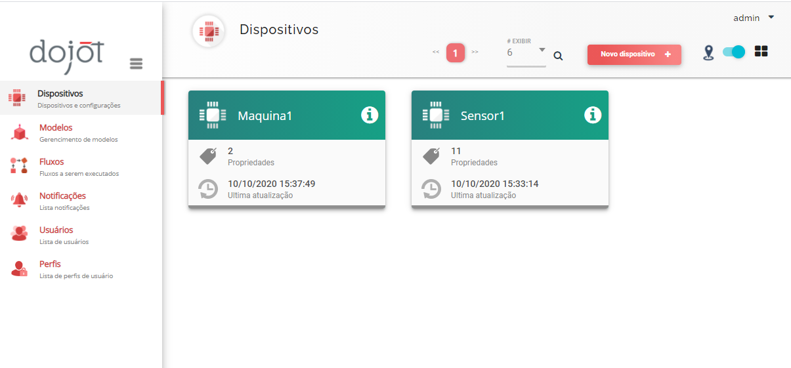
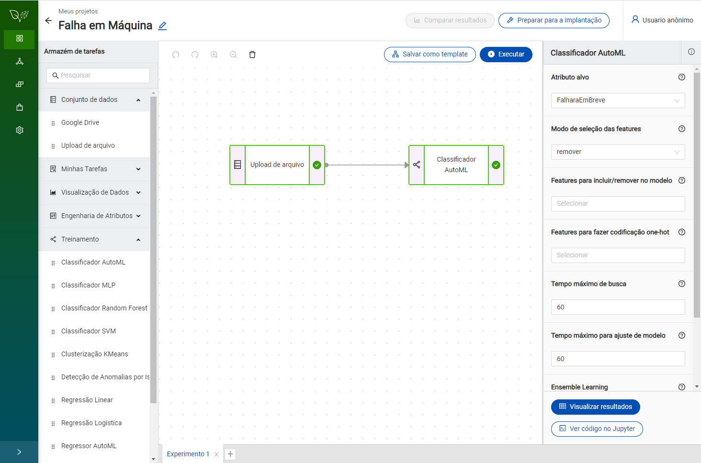
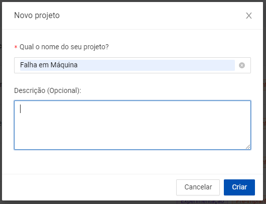
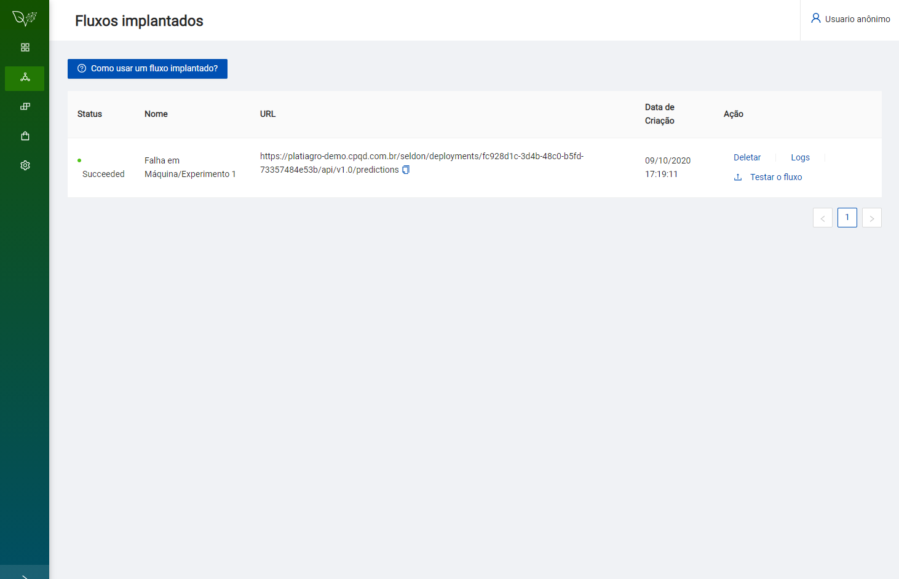
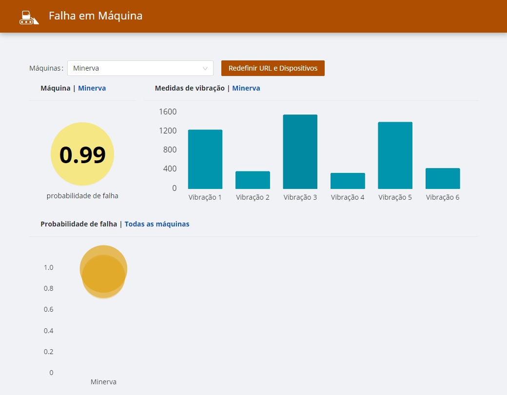

O Que Você Vai Aprender
- Como usar a plataforma dojot para capturar dados de sensores IoT
- Como construir um modelo para predição de falha utilizando dados capturados pela dojot
- Como enviar os dados da dojot para um fluxo implantado na PlatIAgro
- Como conectar uma aplicação à solução de AI + IoT
Do Que Você Precisa Para Este Tutorial
- Um ambiente com a PlatIAgro e dojot prontas para uso.

Crie um Novo Modelo "Sensor"
- No menu lateral, selecione o item Modelos - Gerenciamento de modelos.
- Clique no botão Novo Modelo +, preencha com o nome "Sensor".
- Adicione novos atributos:
- Nome do atributo: Maquina Tipo de atributo: Valor estático Tipo de valor: Texto Valor: Minerva
- Nome do atributo: Data Tipo de atributo: Valor dinâmico Tipo de valor: Texto
- Nome do atributo: Temperatura Tipo de atributo: Valor dinâmico Tipo de valor: Inteiro
- Nome do atributo: Umidade Tipo de atributo: Valor dinâmico Tipo de valor: Inteiro
- Nome do atributo: Vibracao1 Tipo de atributo: Valor dinâmico Tipo de valor: Inteiro
- Nome do atributo: Vibracao2 Tipo de atributo: Valor dinâmico Tipo de valor: Inteiro
- Nome do atributo: Vibracao3 Tipo de atributo: Valor dinâmico Tipo de valor: Inteiro
- Nome do atributo: Vibracao4 Tipo de atributo: Valor dinâmico Tipo de valor: Inteiro
- Nome do atributo: Vibracao5 Tipo de atributo: Valor dinâmico Tipo de valor: Inteiro
- Nome do atributo: Vibracao6 Tipo de atributo: Valor dinâmico Tipo de valor: Inteiro
- Nome do atributo: HorasDesdeAUltimaFalha Tipo de atributo: Valor dinâmico Tipo de valor: Inteiro
- Clique no botão Salvar
Crie um Novo Dispositivo "Sensor1"
- No menu lateral, selecione o item Dispositivos - Dispositivos e configurações.
- Clique no botão Novo Dispositivo +, preencha com o nome "Sensor1".
- Selecione o modelo Sensor
- Clique no botão Salvar
Crie um Novo Modelo "Maquina"
- No menu lateral, selecione o item Modelos - Gerenciamento de modelos.
- Clique no botão Novo Modelo +, preencha com o nome "Maquina".
- Adicione novos atributos:
- Nome do atributo: Maquina Tipo de atributo: Valor estático Tipo de valor: Texto Valor: Minerva
- Nome do atributo: FalharaEmBreve Tipo de atributo: Valor dinâmico Tipo de valor: Float
- Clique no botão Salvar
Crie um Novo Dispositivo "Minerva"
- No menu lateral, selecione o item Dispositivos - Dispositivos e configurações.
- Clique no botão Novo Dispositivo +, preencha com o nome "Minerva".
- Selecione o modelo Maquina
- Clique no botão Salvar
Muito bem! A dojot já está pronta para receber os dados de sensores IoT.
No próximo passo iremos construir um modelo de predição de falhas na PlatIAgro.

Crie um Novo Projeto
Para dar início a um projeto, clique no botão "Novo Projeto", localizado acima da lista de projetos.
Ao clicar no botão será aberto um formulário onde é possível informar um nome e descrição.

Construa um Fluxo de Tarefas
Após criar um novo projeto, será possível experimentar vários fluxos de tarefas, seja para o treinamento de modelos ou visualização de resultados.
Posteriormente, será possível decidir qual deles seguirá para implantação.
- No "Armazém de tarefas", dentro do grupo "Conjunto de dados", arraste a tarefa "Upload de arquivo" para o painel central.
- No "Armazém de tarefas", dentro do grupo "Treinamento", arraste a tarefa "Classificador AutoML" para o painel central.
- No painel central, selecione a tarefa Upload de arquivo". Os detalhes da tarefa irão aparecer à direita.
- Clique no botão "Selecionar" e escolha o arquivo "FalhaMaquinasAgricolas.csv", obtido no passo anterior.
- Clique no botão "Importar" e importe o arquivo FalhaEmMaquinasAgricolas.csv.
- No painel central, selecione a tarefa "Classificador AutoML". Os detalhes da tarefa irão aparecer à direita.
- Selecione o "Atributo alvo": "FalharaEmBreve"
Executar Fluxo de Experimentação
Clique no botão "Executar", a seguinte mensagem será exibida: "Executando o fluxo"
Quando a execução do fluxo for concluída com sucesso, as tarefas ficarão destacadas em verde.
Faça a Implantação do Fluxo de Experimentação
No painel do experimento, clique no botão Preparar para a implantação.
Você será direcionado à página de fluxos implantados.

Muito bem! A PlatIAgro já está pronta para realizar predições com os dados coletados pela dojot.
No próximo passo iremos conectar dojot e PlatIAgro.
Vamos conectar um dashboard ao modelo implantado.
- Acesse a aplicação dashboard
- Clique em Informar, preencha a URL e Dispositivos e clique em OK.
Aguarde uns instantes, e então você verá as informações de sensores e probabilidades de falha retornadas pelo modelo.

Parabéns! Você construiu um fluxo AI + IoT com PlatIAgro e dojot.
Próximos Passos
- Crie uma Tarefa na PlatIAgro
- Conheça as Tarefas Nativas da PlatIAgro